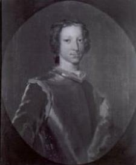
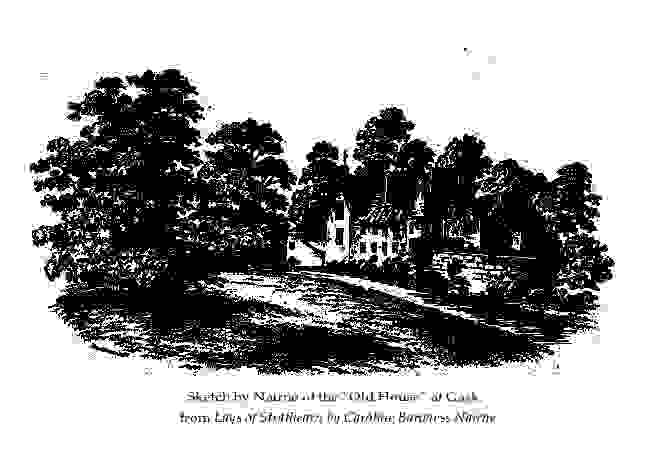

The Auld House
Attainder and Exile of prominent Stuarts'Supporters
Text (and probably music) by Lady Nairne
Tune - Mélodie"The Auld House" from "Lays from Strathearn", p.1 (c.1850)
Sequenced by Christian Souchon

Laurence Oliphant, 7th Laird of Gask, Aide de camp to Prince Charlie

|
1. Oh, the auld house, the auld house,
What tho' the rooms were wee? Oh! kind hearts were dwelling there, And bairnies fu' o' glee; The wild rose and the jessamine Still hang upon the wa', How mony cherish'd memories Do they, sweet flowers, reca'. 2. Oh, the auld laird, the auld laird, Sae canty, kind and crouse, How mony did he welcome to His ain wee dear auld house; And the leddy too, sae genty, There shelter'd Scotland's heir, And clipt a lock wi' her ain hand, Frae his lang yellow hair. 3. The mavis still doth sweetly sing, The blue bells sweetly blaw, The bonny Earn's clear winding still, But the auld house is awa'. The auld house, the auld house, Deserted tho' ye be, There ne'er can be a new house Will seem sae fair to me. 4. Still flourishing the auld pear tree The bairnies liked to see, And oh, how aften did they speir When ripe they a' wad be? The voices sweet, the wee bit feet Aye rinnin' here and there, The merry shout—oh! whiles we greet To think we'll hear nae mair. 5. For they are a' wide scatter'd now, Some to the Indies gane, And ane alas! to her lang hame; Not here we'll meet again. The kirkyaird, the kirkyaird! Wi' flowers o' every hue, Shelter'd by the holly's shade An' the dark sombre yew. 6. The setting sun, the setting sun! How glorious it gaed doon; The cloudy splendour raised our hearts To cloudless skies aboon! The auld dial, the auld dial! It tauld how time did pass; The wintry winds hae dung it doon, Now hid 'mang weeds and grass. |
1. O vieille maison, vieille maison,
Si petite pourtant, Tu logeais tant de coeurs purs et bons, Tant de joyeux enfants. Sous l'églantine et le jasmin Tes murs disparaissaient. Tant de souvenirs des temps anciens A ces fleurs sont liés. 2. O noble vieillard, noble vieillard, Toujours aimable et gai, Plus d'un hôte ici fut charmé par Ton hospitalité. Quand ta noble épouse hébergea Le royal héritier, Sa main de ses blonds cheveux coupa, Une mèche dorée. 3. Si la grive encor répand un chant, La jacinthe un parfum, Si l'Earn suit son parcours hésitant, De toi ne reste rien. Vieille maison, vieille maison, Demeure abandonnée, Nul palais aux imposants balcons Ne peut te remplacer! 4. Et le vieux poirier toujours fleurit Comme aux tendres années, Nous lorgnions plus d'une fois vers lui Pour voir s'il mûrissait. Les douces voix, les petits pieds Qui couraient ça et là, Oh les cris joyeux—jours fortunés Qui ne reviendront pas. 5. Tous sont maintenant partis au loin, Aux Antilles, certains. Et l'une, hélas, a pris le chemin D'où l'on ne revient point. Le cimetière, le cimetière! Fleuri, paisible et doux, A l'ombre de l'if sombre et austère Et des bouquets de houx. 6. O soleil couchant, soleil couchant Aux splendides lueurs! Les nuages allaient emportant Vers des cieux purs nos coeurs! Le cadran solaire est détruit Et la fuite du temps, Les vents d'hiver et l'herbe et l'ortie La disent à présent. (Trad. Ch.Souchon (c) 2006) |
|
Is the "Auld House" the house of Gask?
"Laurence Oliphant, , the 6th Laird of Gask, bore the standard of the Stuarts in the Jacobite risings of 1715 and 1745. In September 1745 Prince Charles Edward breakfasted with the Oliphants at Gask on his way to Edinburgh from Dunblane. Fired with enthusiasm and passion, the old Laird's 20-year-old son, Laurence, an aide-de-camp to Bonnie Prince Charlie, joined his father to accompany his Prince in the '45. Father and son then wintered in Inverness with the Prince, awaiting the spring,... In 1746, at Culloden..., father and son fought side by side with their Prince... But that fateful day brought...disaster and ruin on the Jacobite cause and ... its supporters. Both the old and the young Laird were "attainted" of high treason. The house at Gask was ransacked and plundered by Hanoverian soldiers, and the estate declared forfeit. The Oliphants were effectively ruined. Father and son spent the next six months in hiding in the hills and sheltered by Jacobite sympathisers. Narrowly avoiding their pursuers, they then made their way to Arbroath where they boarded a ship for Gothenburg. From Sweden they journeyed to France where they remained in exile for seventeen years. During this time, in 1753, Amélie, wife of the 6th Laird, fortunately managed, with help from devoted family friends, to repurchase the estate of Gask from the Barons of the Exchequer... As passionately faithful to her king as was her father, Carolina, one of the four daughters of the 7th Laird of Gask, lauded the Jacobites through the gentler means of ballad... Carolina's mother was Margaret, daughter of Duncan Robertson, the 14th Chief of Struan, another prominent Jacobite family. Carolina, fondly known as... "The White Rose of Gask", had been nurtured on tales of chivalry, courage and loyalty to the Jacobite tradition, her patriotism aroused by tales of the exploits of the great house of Oliphant... She soon became well known under her married title of Baroness or Lady Nairne as writer of a number of now-celebrated Scottish ballads... Family legend has it that her wistful ballad "The Attainted Scottish Nobles" so moved the English King George IV (1762-1820-1830) that he restored to the Nairnes the hereditary title that had been stripped from them for their support of the Stuarts. Carolina wrote numerous other haunting songs, not all related to the Jacobite cause. One, the ballad "Auld Hoose", regretted the destruction, not as might be thought of Gask, but of the house of her dreams... But the old house at Gask was also destined for demolition, having being overrun by rodents..." From an Interview with Sarah Powell in "Burke's Peerage and Gentry" "The 'Auld House' describes the deserted remains of an old building. In this case, "Some are to the Indies gane/And ane, alas! to her lang hame" . Although the poem is not explicit about the politics of the inhabitants, in fact, the "auld laird, sae canty, kind and crouse" refers to (her father,) Laurence Oliphant, who was an avowed Jacobite. The poem suggests that the political cause, like the inhabitants themselves, has vanished... From "Gender, Genre and the Imagining of the Scottish Nation: the Songs of Lady Nairne" By Leith Davis. For a family tree of Lady Carolina and her husband, click here . |
La "Vieille maison" est-elle la maison de Gask?
"Laurence Oliphant, 6ème Laird de Gask, portait l'étendard des Stuarts lors des soulèvement Jacobites de 1715 et 1745. En septembre 1745, le Prince Charles Edouard déjeuna avec les Oliphant à Gask alors qu'il se rendait d'Edimbourg à Dunblane. Plein d'enthousiasme et de passion, le fils du vieux Laird, alors âgé de 20 ans, suivit son père sur les traces du Prince en 1745. Père et fils passèrent l'hiver à Inverness où le Prince avait pris ses quartiers d'hiver... En 1746, à Culloden, ils combattirent côte à côte pour Charlie... Mais ce jour fatal fut désastreux tant pour la cause Jacobite que pour ceux qui la soutenaient. Le vieux et le jeune Laird furent déclarés déchus de leurs droits et de leurs biens ("attainder") pour haute trahison. La maison de Gask fut dévastée et pillée par les soldats hanovriens et les terres y rattachées furent confisquées. Les Oliphant furent bel et bien ruinés. Le père et le fils passèrent 6 mois à se cacher dans les collines, hébergés par des Pro-Jacobites. Avec leurs poursuivants aux trousses, ils parvirent à Arbroath où ils purent s'embarquer pour Göteborg. De Suède il partit pour la France où il resta en exil dix-sept ans. Pendant ce temps-là sa femme Amélie, parvint, avec l'aide d'amis fidèles de la famille, à racheter aux "Barons de l'Echiquier" (=aux Domaines) les terres de Gask... Aussi attachée à "son" roi que le fut son père, Carolina, l'une des quatre filles du 7ème Laird de Gask, fit l'éloge des Jacobites par un moyen plus pacifique: la poésie... Sa mère, Marguerite, était la fille de Duncan Robertson, 14 Chef du Clan Struan, une autre importante famille Jacobite. Chez Caroline qu'on désignait du surnom affectueux de "Rose blanche de Gask" et qui ne rêvait que de romans de chevalerie, d'exploits courageux et de dévotion à la cause Jacobite, l'histoire des exploits de la grande famille Oliphant ne pouvait qu'aviver le patriotisme... Elle fut bientôt connue sous son identité maritale de Baronne ou Lady Nairne comme l'auteur de plusieurs fameuses ballades écossaises... Si l'on en croit une légende qui a cours dans la famille, c'est la mélancolique ballade des "Nobles écossais dépossédés" qui émut le roi d'Angleterre George IV (1762-1820-1830) au point qu'il restaura au profit des Nairne le titre héréditaire dont ils avaient été dépouillés, en raison de leur soutien aux Stuarts. Caroline composa bien d'autres chants mémorables encore dont tous n'ont pas pour sujet la cause Jacobite. L'un d'eux, la "Vieille Maison" déplore la destruction, non pas de la maison de Gask, comme on pourrait le croire, mais de la maison de ses rêves... Mais la maison de Gask elle aussi était destinée à être détruite car elle était infestée de rongeurs..." Extrait d'une interview de Sarah Powell à "Burke's Peerage and Gentry" "La Vieille Maison" décrit les ruines abandonnées d'une ancienne bâtisse. En l'occurrence, "certains l'ont quittée pour les Antilles/ Et il en est une, hélas, qui la quitta pour l'au-delà". Bien que le poème ne précise pas les options politiques des habitants, on ne peut douter que le "noble vieillard/ Toujours aimable et gai" désigne (le père de l'auteur), Laurence Oliphant, qui fut un Jacobite militant. Le poème suggère l'idée que la cause politique, tout comme les habitants, s'est désormais évanouie... " Extrait de "La femme et le genre dans l'imaginaire national écossais: les ballades de Lady Nairne" par Leith Davis. For a family tree of Lady Carolina and her husband, click here .
|
